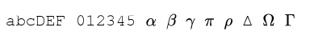
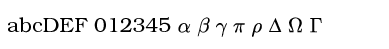
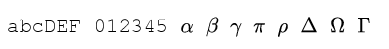

Fonts
This page contains a list of all supported fonts when not in LaTeX mode and a few examples of fonts in LaTex mode. For a simple list of reasonable fonts in non-latex mode see here.
Non-LaTeX mode
The list below shows what these fonts look like and whether SVG output is supported.
| ID | Aliases | Looks like | SVG |
|---|---|---|---|
| rm | roman |  | ✘ |
| rmb | roman bold |  | ✘ |
| rmi | roman italic |  | ✘ |
| ss | sans serif |  | ✘ |
| ssb | sans serif bold |  | ✘ |
| ssi | sans serif italic |  | ✘ |
| tt | typewriter |  | ✘ |
| ttb | typewriter bold | ✘ | |
| ttbi | typewriter bold italic |  | ✘ |
| tti | sans serif |  | ✘ |
| texcmr | computer modern roman |  | ✔ |
| texcmb | computer modern bold |  | ✔ |
| texcmti | computer modern text italic |  | ✔ |
| texcmmi | computer modern maths italic |  | ✔ |
| texcmss | computer modern sans serif |  | ✔ |
| texcmssb | computer modern sans serif bold | ✔ | |
| texcmssi | computer modern sans serif italic |  | ✔ |
| texcmtt | computer modern typewriter |  | ✔ |
| texcmitt | computer modern italic typewriter |  | ✔ |
| texmi |  | ✔ | |
| plsr | ✔ | ||
| pldr |  | ✔ | |
| pltr |  | ✔ | |
| plti |  | ✔ | |
| plcr |  | ✔ | |
| plci |  | ✔ | |
| plss |  | ✔ | |
| plcs |  | ✔ | |
| plsa |  | ✔ | |
| plba |  | ✔ | |
| plge | ✔ | ||
| plgg |  | ✔ | |
| plgi |  | ✔ | |
| pstr | times roman |  | ✘ |
| pstb | times bold |  | ✘ |
| psti | times italic | ✘ | |
| pstbi | times bold italic | ✘ | |
| psc | courier |  | ✘ |
| pscb | courier bold |  | ✘ |
| psco | courier oblique |  | ✘ |
| pscbo | courier bold oblique |  | ✘ |
| psh | helvetica |  | ✘ |
| pshb | helvetica bold | ✘ | |
| psho | helvetica oblique |  | ✘ |
| pshbo | helvetica bold oblique |  | ✘ |
| pshc |  | ✘ | |
| pshcb |  | ✘ | |
| pshcbo |  | ✘ | |
| pshcdo |  | ✘ | |
| pshn | helvetica narrow |  | ✘ |
| pshnb | helvetica narrow bold |  | ✘ |
| pshno | helvetica narrow oblique |  | ✘ |
| pshnbo | helvetica narrow oblique bold |  | ✘ |
| psagb | avantgarde book |  | ✘ |
| psagd | avantgardedemi |  | ✘ |
| psagd | avantgardedemi | | ✘ |
| psagbo | avantgardebook oblique |  | ✘ |
| psagdo | avantgardedemi oblique |  | ✘ |
| psbl | bookman light |  | ✘ |
| psbd | b. demi | ✘ | |
| psbli | b. light italic |  | ✘ |
| psbdi | b. demi italic | ✘ | |
| psncsr | newcentury roman | ✘ | |
| psncsb | newcentury bold | ✘ | |
| psncsi | newcentury italic |  | ✘ |
| psncsbi | newcentury bold italic |  | ✘ |
| pspr | palatino roman |  | ✘ |
| pspb | palatino bold |  | ✘ |
| pspi | palatino italic |  | ✘ |
| pspbi | palatino. bold italic |  | ✘ |
| pszcmi | zapfchancery medium italic |  | ✘ |
| arial8 | arial |  | ✘ |
| arial8b | arial bold |  | ✘ |
| arial8bi | arial bold italic |  | ✘ |
| arial8i | arial italic | ✘ | |
| cour8 | courier |  | ✘ |
| cour8b | courier bold | ✘ | |
| cour8bi | courier bold italic |  | ✘ |
| cour8i | courier italic | ✘ | |
| times8 | times |  | ✘ |
| times8b | times bold |  | ✘ |
Symbol fonts
| ID | Aliases | Looks like | SVG |
|---|---|---|---|
| pssym |  | ✘ | |
| plcg | (greek) |  | ✘ |
| plsg | (greek) |  | ✘ |
| plcc | (cyrillic) |  | ✘ |
| pszd | zapfchancery demi |  | ✘ |